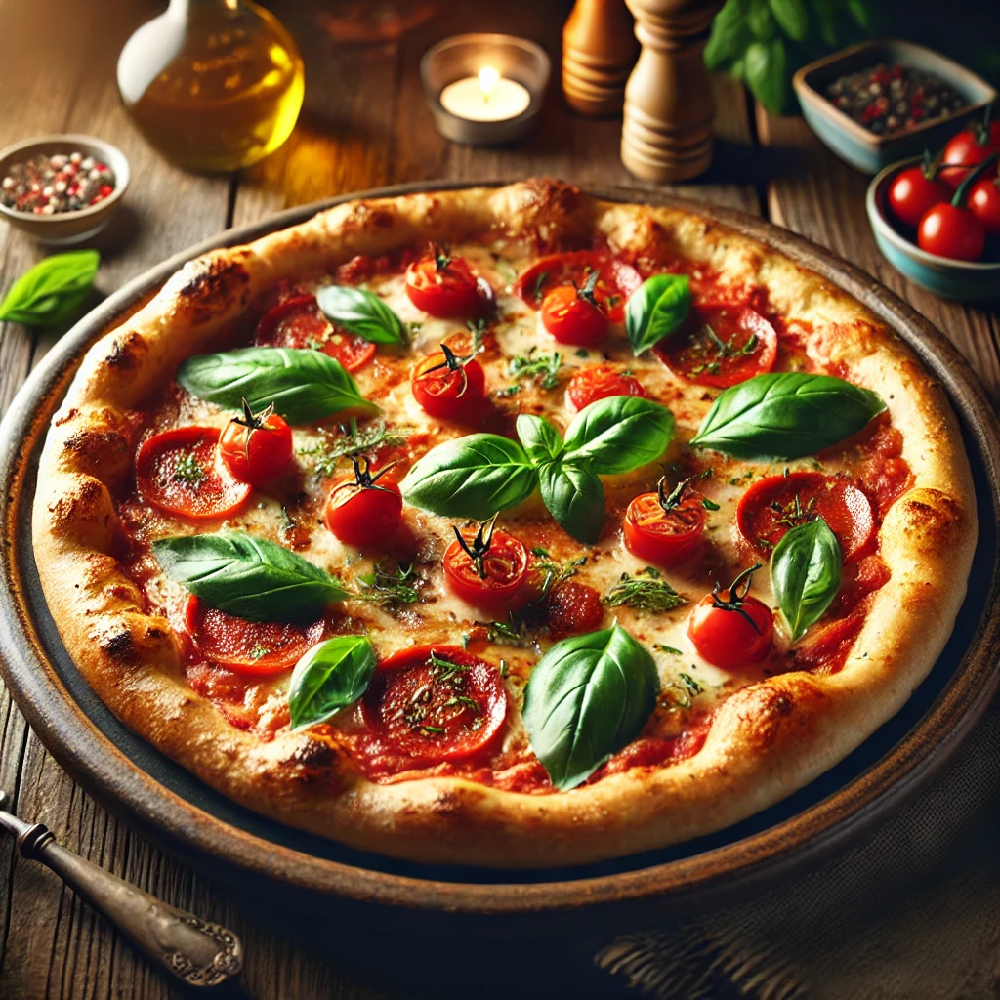

Pizza
Ingrédients
- 1 pâte à pizza
- 200g de sauce tomate
- 200g de mozzarella râpée
- 100g de pepperoni
- 1 poivron coupé en lamelles
- 1 oignon émincé
- Olives noires
- Origan séché
- Huile d'olive
Instructions
- Préchauffer le four à 220°C (425°F).
- Étaler la pâte à pizza sur une plaque de cuisson légèrement huilée.
- Étaler la sauce tomate sur la pâte.
- Parsemer de mozzarella râpée.
- Ajouter les tranches de pepperoni, les lamelles de poivron, les oignons émincés et les olives
noires.
- Assaisonner avec de l'origan séché et un filet d'huile d'olive.
- Cuire au four pendant 15-20 minutes, jusqu'à ce que la croûte soit dorée et le fromage fondu et
bouillonnant.
- Sortir du four et laisser reposer quelques minutes avant de trancher et de servir.